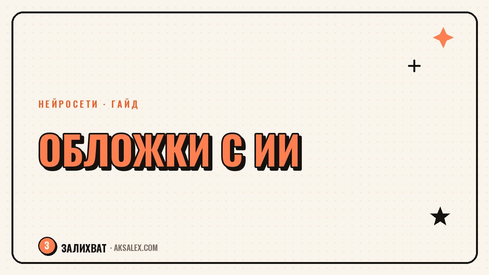

AI tools for blog covers and thumbnails

The cover decides whether someone opens your video or scrolls past. A person has less than a second to make that call, and no amount of text inside the video will help - only the image works. Making a cover used to eat up an entire evening in a photo editor; now an AI tool puts together a version in a couple of minutes. Let's look at which tools actually work for this and how to set up a process so your covers don't all start to look the same.
Why bother rethinking your covers at all
A cover isn't decoration - it's the first part of the video. The algorithm shows it in the feed alongside the first frame, and a click on that image decides whether the reach keeps building further. If your cover blends in with all the other shots of a face on a neutral background, the video loses out on impressions before anyone even hears the first line.
AI doesn't replace taste here - it removes the busywork: cutting out the background, arranging the composition, making the text block readable on a small screen. The actual decisions are still yours - what emotion is on the face, what headline hooks this particular audience.
What tasks AI tools actually handle
- Removing and replacing backgrounds in seconds, no manual outlining
- Upscaling a blurry video frame into a sharp image
- Generating backgrounds and textures for the video's theme when you don't have your own footage
- Fitting and placing text on the cover with readable contrast
- Bulk-generating 5-10 cover variants for a quick A/B test
Important: a completely fabricated face on your own blog's cover is a bad idea - the audience notices the swap quickly, and trust drops. But generating backgrounds, textures, and decorative elements is perfectly fine.
Comparing the tools
| Tool | What it's for | Pro | Con |
|---|---|---|---|
| Canva with AI features | Quick text and templates | Ready-made proportions for each platform | Templates get old fast |
| Remove.bg | Background removal | One click, precise outline | Background only, no design |
| Photoroom | Background swap + composition | Keeps the subject well-placed in the frame | Paid features limited in the free version |
| Midjourney | Generating backgrounds and textures | Strong visuals without your own photos | Takes time to master the prompts |
You don't need to keep all four services on hand. One background remover and one template editor are enough to get started - that's plenty to make your covers look put-together.
How to build a cover in 10 minutes
Step by step
- Grab the most emotional frame from the video - surprise, laughter, a close-up of the key object
- Remove the background via Remove.bg or Photoroom if it's distracting
- Add a contrasting background or texture that fits the theme
- Add short text - 3-5 words in large font, not a recap of the video
- Check readability on a small phone screen, not just on your monitor
A cover should work without sound and without a caption - if the picture alone doesn't make it clear what the video is about, the text on it is redundant.
Common mistakes
The most common mistake is too much text on the cover. People scrolling the feed don't read paragraphs - they pick up on emotion and 2-3 words. The second mistake is using the same template video after video: followers stop pausing on it because their brain already knows what's coming.
The third one is generating a face with AI instead of using your own footage. It saves time once, but it undermines trust if people notice. Use AI for backgrounds, text, and composition, and keep the face and emotion real.
How to make this a consistent process
Put together a set of 3-4 cover templates for different content formats - a review, a personal take, a tutorial. Only the frame and the text change; the composition stays recognizable. Over time, followers start recognizing your content by the cover style before they've even read the headline.
Once a month, check the stats: which covers brought more impressions and better thumbnail retention. Keep the winning combinations of template and frame type, and change the rest.
Frequently asked questions
Can I use an AI tool to generate a face for the cover?
Better not to, for your own blog - the audience notices the swap over time, and trust drops. For backgrounds, textures, and decorative elements, generation works well.
How long should one cover take?
With a ready template and set of actions - 5-10 minutes. If you build the composition from scratch every time, the time grows a lot without any gain in quality.
Do you need a paid plan in cover-making services?
Free background removal and basic templates are enough to get started. A paid plan makes sense once you're publishing covers every day and need speed.
How do you check that a cover is working?
Compare impressions and thumbnail retention for videos with the new cover versus the old format over the same period. The difference in stats will show whether the change was worth it.
What matters more - the text on the cover or the frame?
A frame with emotion works stronger than short text. Text should serve as a clarification, not a replacement for the image itself.
not by hand